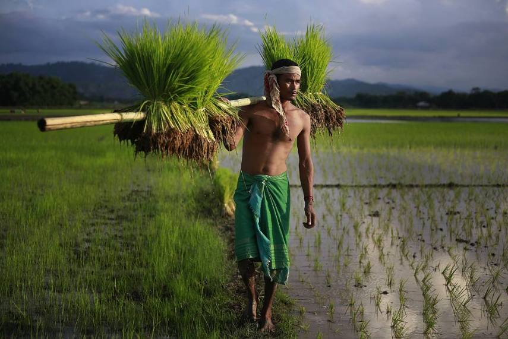
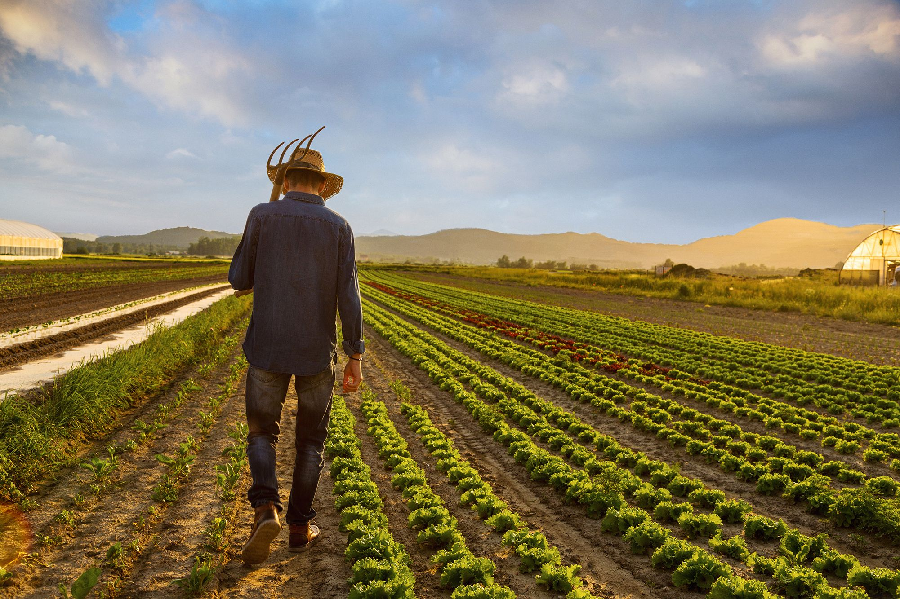

Our aim


IMPROVING LIVES


Recommendation about the type of crops to be cultivated which is best suited for the respective conditions.

Recommendation about the type of fertilizer best suited for the particular soil and the recommended crop.
Predicting the price of the crops in the market according to the current trends to increase profit.
We use state-of-the-art machine learning and deep learning technologies to help you guide through the entire farming process. Make informed decisions to understand the demographics of your area, understand the factors that affect your crop and keep them healthy for a super awesome successful yield.